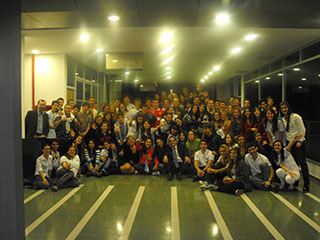
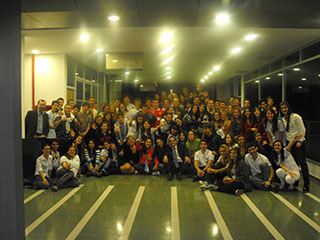

- Cuándo: Abril a Junio
- Universidad: UAI

- Nº de graduados: 90
- Colegios que participaron: Padre José Margis - María Madre de la Iglesia - Sagrada Familia - Madre Cabrini - Otros
- Proyectos realizados: 9
- GruposJoven-es futuro - Juntos por la Vida - Joven Iniciativa - Jóvenes tectónicos - Voluntad de Fuego - Contradicciones - Desconectados - Pintando un futuro - Sembrando sonrisas
- Resumen de proyectos:
-
(Sembrando sonrisas): Visita a hogar de ancianos.
-
(Juntos por la Vida): evento en celebración de la vida en Plaza Pringles, pintada de manos plasmadas en una gran bandera. Video
-
(Joven iniciativa): Visita al hogar de niños Juan Orione. video
-
(Joven-es futuro): jornada informativa, recreativa con premios y sorteos en escalinatas Parque España, más escribir un futuro con valores positivos, qué cosas hacemos por y para el mañana. Video
-
(Desconectados): hacer que los niños de 6 a 12 años se desconecten de la computadora por una tarde, a través de una jornada recreativa en Club Atlético Olímpico.
-
Disertantes: Jorge Roldán, César Cingolani, Pablo y Silvina, Analía Bocassi y otros.
-
Coordinadores: General: Pablo Guiñazú. Grupos y colaboradores: Melisa Cabral, Camila Cabral, Marcos Gozzi, Anabella Berretta, Silvina Spataro, Pablo Guiñazú, Federico Salvetti, Celeste Rodríguez, Cristian Zequeira, Lisandro Guiñazú, Celina Di Girolamo, Belén Volmare, Franco Michati, Agustín Fassi, Vanesa González, Julieta Texier, Daiana Sosa, Irene Marín.